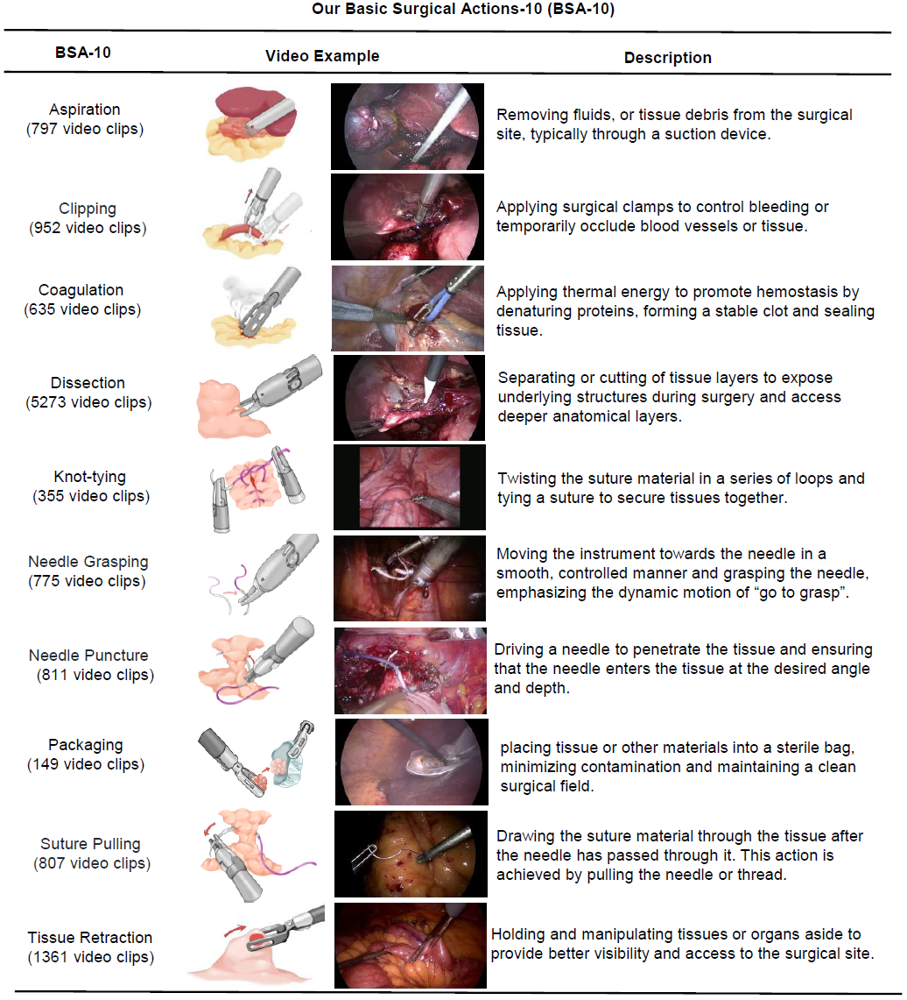
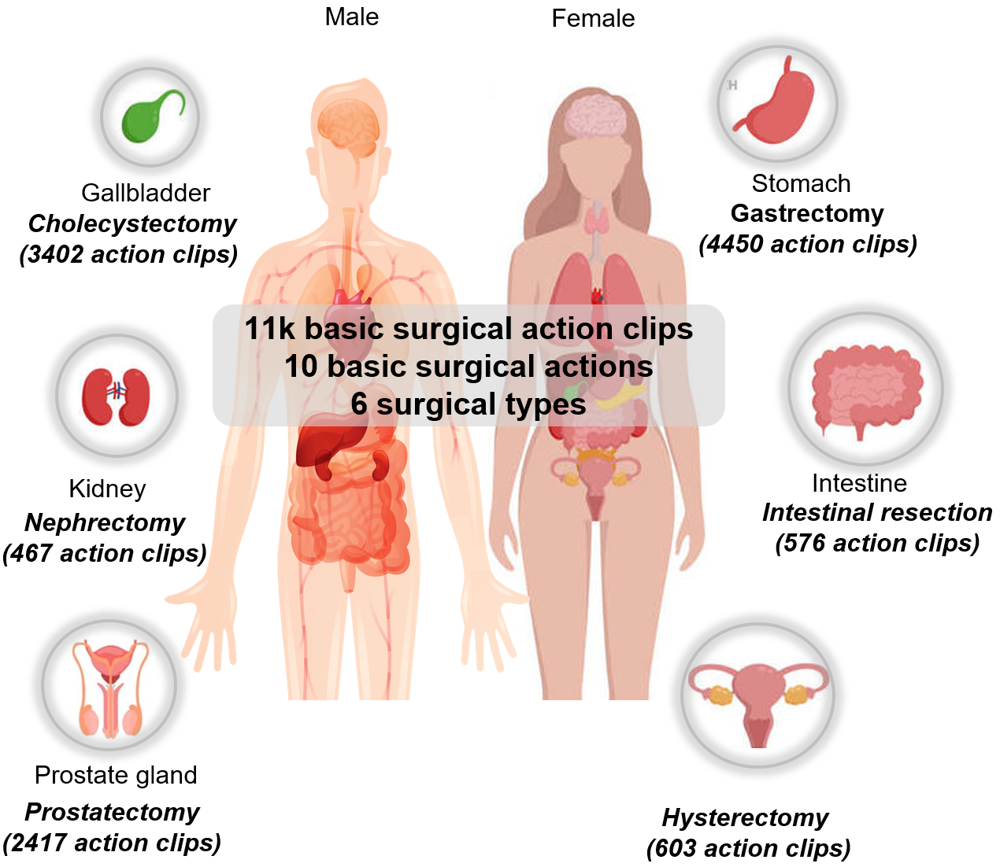
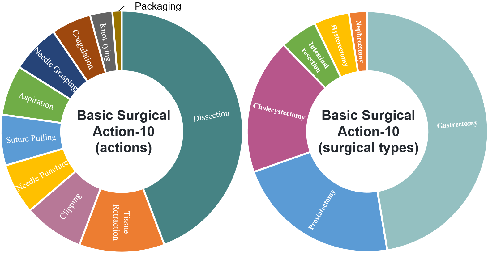
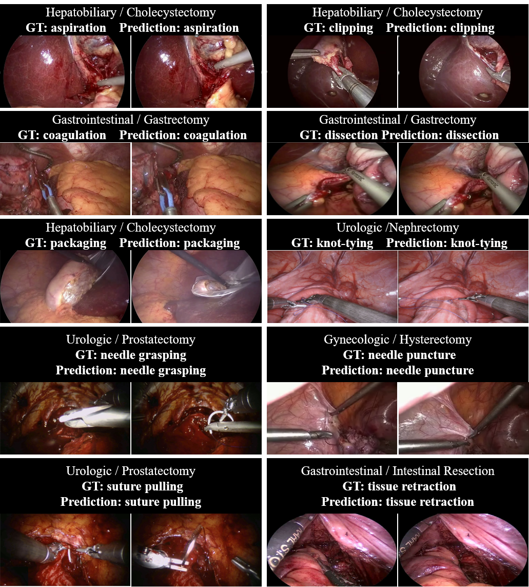
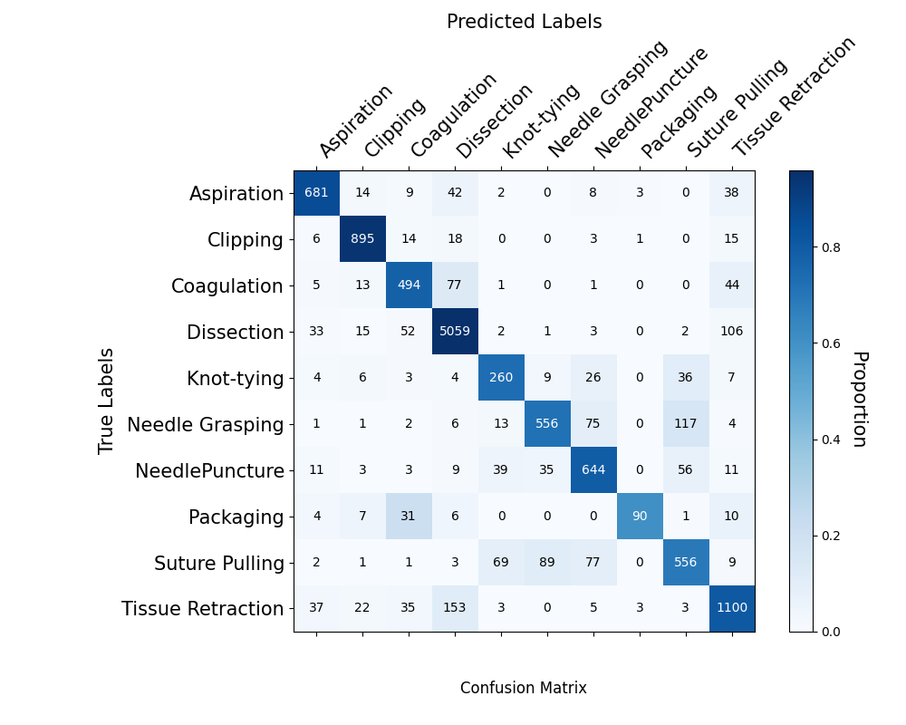
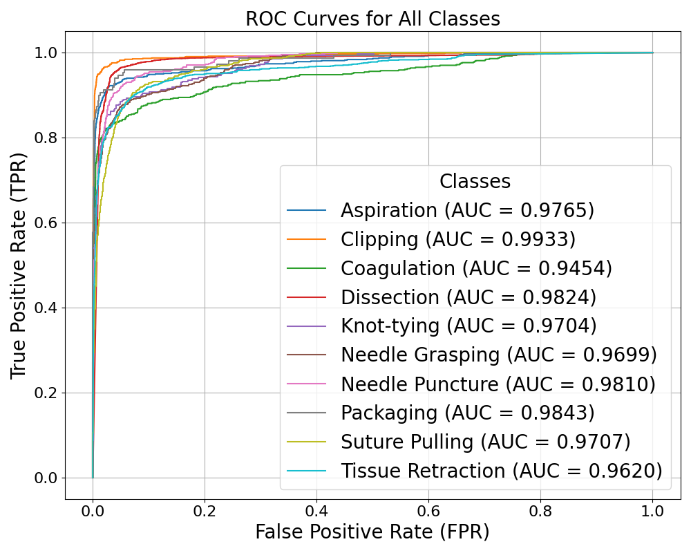
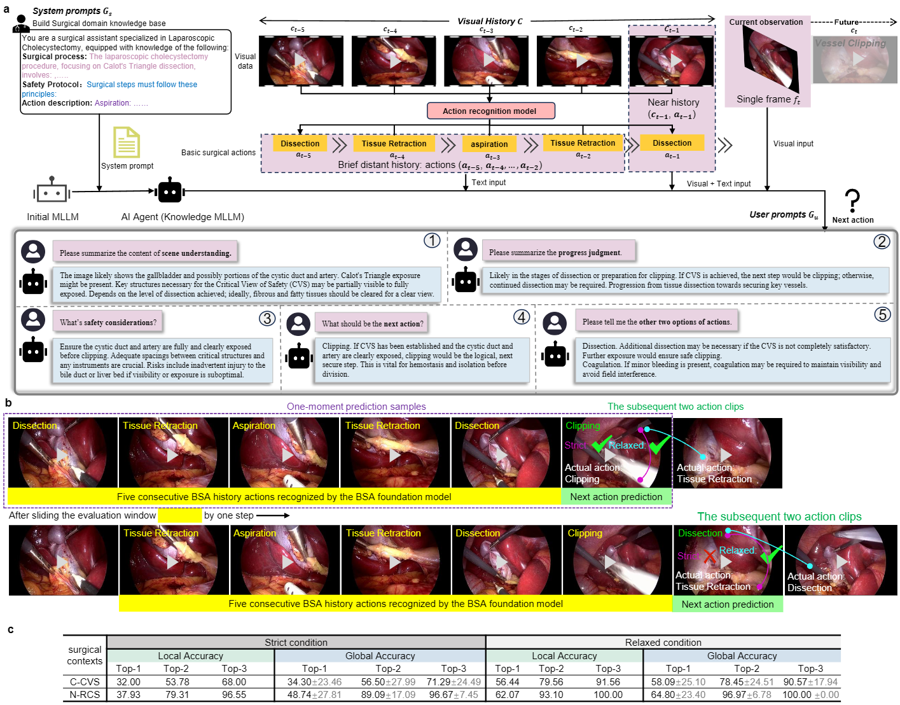
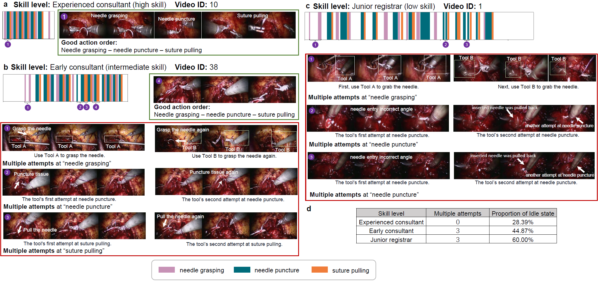
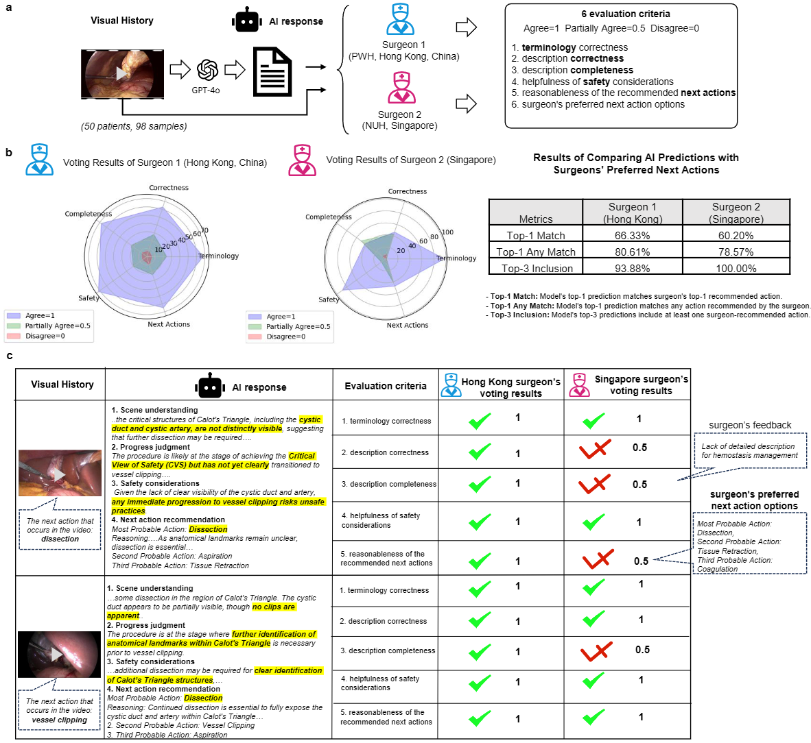

Generalized Recognition of Basic Surgical Actions Enables Skill Assessment and Vision-Language-Model-based Surgical Planning
1 CSE, CUHK, Hong Kong, China
2 BME, NUS, Singapore
3 Dept. of Surgery, CUHK, Hong Kong, China
4 HPB Surgery, NUH, Singapore
5 iHealthTech, NUS, Singapore
6 EEE, HKU, Hong Kong, China
7 Dept. of Urology, PKU Third Hospital, Beijing, China
8 HPB Surgery, Guangxi Medical Univ. Cancer Hospital, Nanning, China
9 Electronic Engineering, CUHK, Hong Kong, China
10 Global College, SJTU, Shanghai, China
11 Thoracic Surgery, Shenzhen People's Hospital, Shenzhen, China
12 Urology, Dept. of Surgery, CUHK, Hong Kong, China
13 General Surgery (Endocrine/Thyroid), NUH, Singapore
14 JHU, Baltimore, USA
15 NVIDIA
16 ECE, NUS, Singapore
* Corresponding authors.
Abstract
Artificial intelligence, imaging, and large language models have the potential to transform surgical practice, training, and automation. Understanding and modeling of basic surgical actions (BSA), the fundamental unit of operation in any surgery, is important to drive the evolution of this field. In this paper, we present a BSA dataset comprising 10 basic actions across 6 surgical specialties with over 11,000 video clips, which is the largest to date. Based on the BSA dataset, we developed a new foundation model that conducts general-purpose recognition of basic actions. Our approach demonstrates robust cross-specialist performance in experiments validated on datasets from different procedural types and various body parts. Furthermore, we demonstrate downstream applications enabled by the BAS foundation model through surgical skill assessment in prostatectomy using domain-specific knowledge, and action planning in cholecystectomy and nephrectomy using large vision-language models. Multinational surgeons' evaluation of the language model's output of the action planning explainable texts demonstrated clinical relevance. These findings indicate that basic surgical actions can be robustly recognized across scenarios, and an accurate BSA understanding model can essentially facilitate complex applications and speed up the realization of surgical superintelligence.
A New Dataset of Basic Surgical Actions

Illustration of our BSA-10 dataset.

Our dataset is collected from 6 body parts (i.e., gallbladder, stomach, kidney, intestine, prostate gland, and uterus)

Statistical analysis of the dataset across different basic surgical actions and procedure types.
Generalized BSA Recognition Model on BSA-10 Dataset

Qualitative visualization of BSA foundation model predictions across diverse surgical procedures.

Results of the model on ten action classes based on the Youden Index which are presented as 95% confidence interval

The confusion matrix across ten action classes by aggregating the individual confusion matrices from each of the ten folds

The receiver operating characteristic (ROC) curve of ten action classes
Surgery-wise performance metrics, displayed with 95% confidence intervals

The receiver operating characteristic (ROC) curve of ten action classes
Surgery-wise performance metrics, displayed with 95% confidence intervals
Downstream Applications
Enabled by the BAS Foundation Model

BSA for surgical action planning with our AI agent.

Action barcode visualization of BSA distributions across expertise levels.

Multi-national surgeon evaluation of AI-generated surgical reasoning and action recommendations
BibTeX
@misc{xu2026generalizedrecognitionbasicsurgical,
title={Generalized Recognition of Basic Surgical Actions Enables Skill Assessment and Vision-Language-Model-based Surgical Planning},
author={Mengya Xu and Daiyun Shen and Jie Zhang and Hon Chi Yip and Yujia Gao and Cheng Chen and Dillan Imans and Yonghao Long and Yiru Ye and Yixiao Liu and Rongyun Mai and Kai Chen and Hongliang Ren and Yutong Ban and Guangsuo Wang and Francis Wong and Chi-Fai Ng and Kee Yuan Ngiam and Russell H. Taylor and Daguang Xu and Yueming Jin and Qi Dou},
year={2026},
eprint={2603.12787},
archivePrefix={arXiv},
primaryClass={cs.CV},
url={https://arxiv.org/abs/2603.12787}
}